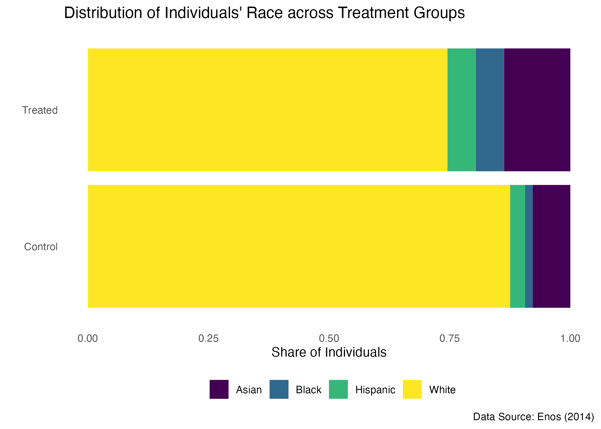

# put all packages we use in a vector
p_needed <- c(
"tidyverse", # shortcut for ggplot2, dplyr, readr
"janitor", # clean variable names
"styler" # to style the code
)
# check if they are already installed, install if not installed
lapply(
p_needed[!(p_needed %in% rownames(installed.packages()))],
install.packages
)
# load the packages
lapply(p_needed, library, character.only = TRUE)
# set the theme for all plots to theme_bw
# feel free to change the theme!
ggplot2::theme_set(ggplot2::theme_minimal())Problem Set 2: Suggested Solutions
Setup
Background
A professor in the Government department at Harvard, Ryan Enos, conducted a randomized field experiment assessing the extent to which individuals living in suburban communities around Boston, Massachusetts, and their views were affected by exposure to demographic change.
Enos, R. D. 2014. “Causal Effect of Intergroup Contact on Exclusionary Attitudes.” Proceedings of the National Academy of Sciences 111(10): 3699–3704.
Subjects in the experiment were individuals riding on the commuter rail line and overwhelmingly white. Every morning, multiple trains pass through various stations in suburban communities that were used for this study. For pairs of trains leaving the same station at roughly the same time, one was randomly assigned to receive the treatment and one was designated as a control. By doing so all the benefits of randomization apply for this dataset.
The treatment in this experiment was the presence of two native Spanish-speaking ‘confederates’ (a term used in experiments to indicate that these individuals worked for the researcher, unbeknownst to the subjects) on the platform each morning prior to the train’s arrival. The presence of these confederates, who would appear as Hispanic foreigners to the subjects, was intended to simulate the kind of demographic change anticipated for the United States in coming years. For those individuals in the control group, no such confederates were present on the platform. The treatment was administered for 10 days. Participants were asked questions related to immigration policy both before the experiment started and after the experiment had ended. You will be working withe the dataset with these variables (names may differ slightly):
| Variable | Description |
|---|---|
treatment |
variable with two levels: “Treated” and “Control” |
att_start |
starting attitude toward immigration issues. Uses a 3 to 15 scale, with higher numbers meaning more conservative |
att_end |
ending attitude toward immigration issues. Uses a 3 to 15 scale, with higher numbers meaning more conservative |
gender |
variable with values “Male” and “Female” |
race |
variable with values “Asian”, “Black”, “Hispanic”, and “White” |
liberal |
logical variable with TRUE meaning liberal |
party |
variable with values “Democrat” and “Republican” |
age |
age in years |
income |
family income in dollars |
line |
commuter train line, with values “Framingham” and “Franklin” |
station |
train station |
hisp_perc |
percentage of Hispanic residents in person’s zip code |
ideology_start |
measure of political ideology, before the experiment, on a 1 to 5 scale, with higher numbers meaning more conservative |
ideology_end |
measure of political ideology, after the experiment, on a 1 to 5 scale, with higher numbers meaning more conservative |
Task 0: Update the Name in YAML
Task 1: Loading the Data
This data comes from Enos (2014), which investigated attitudes toward immigration among Boston commuters.
Please load the dataset trains.tsv from the data folder using the readr package and function read_tsv. Make sure the variable names are nice-to-work-with (janitor package can come in handy).
trains <- read_tsv("data/trains.tsv") %>%
clean_names()Rows: 115 Columns: 14
── Column specification ────────────────────────────────────────────────────────
Delimiter: "\t"
chr (6): Treatment, Gender, Race, Party, Line, Station
dbl (7): Att Start, Att End, Age, Income, Hisp Perc, Ideology Start, Ideolog...
lgl (1): Liberal
ℹ Use `spec()` to retrieve the full column specification for this data.
ℹ Specify the column types or set `show_col_types = FALSE` to quiet this message.Task 2: Overview of the Dataset
Describe the dataset. Please answer the following questions in text and with the code where it is needed. I provide you with some template code that can help in answering one of the questions in the chunk below.
- How many variables are there?
There are 14 variables in the dataset.
- How many observations exist?
There are 115 observations.
- How many of the observations belong to Treatment and how many to Control condition?
64 observations belong to the Control condition, the rest of them, 51 cases, belong to Treatment group.
- What are the types of variables (conceptually, not inside
R)? Recall the plot from the slides.
att_start,att_end,ideology_start,ideology_endare, based on the description of them, ordinal, yet due to a large number of categoriesatt_start,att_end, can be treated as discrete numeric ones in practice.gender,race,liberal,party,line, andstationare all nominal, andhisp_percandincomeare continuous numeric variables.
dim(trains)[1] 115 14# number of values per group
trains %>%
pull(treatment) %>%
table().
Control Treated
64 51 # share of values per group
trains %>%
pull(treatment) %>%
table() %>%
prop.table().
Control Treated
0.5565217 0.4434783 Task 3: Plots for Continuous Discrete Variables
3.1: Make the plots
Create two plots for the distribution of immigration attitudes before the experiment. For the first plot, use geom_histogram(). For the second plot, use geom_bar or make a lollipop plot (see the lab for the code example).
Put the code for the plots into the chunks with respective labels. Don’t forget to make the plots reader-friendly!
Hint: you are welcome to play around with themes argument. Check the examples here: https://ggplot2.tidyverse.org/reference/ggtheme.html
ggplot(data = trains, aes(x = att_start)) +
geom_histogram(
binwidth = 1,
boundary = 3.5, # there is a cutoff at 4
fill = "#800010", # sets the color to a specific value
color = "white" # changes color for borders
) +
labs(
x = "Immigration Attitudes before the Experiment",
y = "Count",
title = "Distribution of Immigration Attitudes before the Experiment",
caption = "Data: Enos (2014)"
) +
scale_x_continuous(breaks = seq(3, 15, by = 1))
ggplot(data = trains, aes(x = att_start)) +
geom_bar(
fill = "#800010", # sets the color to a specific value
color = "white" # changes color for borders
) +
labs(
x = "Immigration Attitudes before the Experiment",
y = "Count",
title = "Distribution of Immigration Attitudes before the Experiment",
caption = "Data: Enos (2014)"
) +
scale_x_continuous(breaks = seq(3, 15, by = 1))
3.2: Discuss the plots
Out of these two, which of the geoms do you think works better for presenting a discrete variable? Why do you think so?
Barplot is a better choice given that this variable has discrete values, as it communicates the nature of the variable clearer. The gaps between the bars signal that there are no values in-between.
Task 4: Recreating a Plot with Layered geoms
When looking at the data from the experiments, we often want to compare the characteristics of the respondents across groups. We should have have very similar groups, on average, to ba able to make valid inferences from the experiment. In this case, we would like to know if prior attitudes to immigration differ between (1) those who got assigned to the treatment condition and (2) those who were assigned to the control condition. Below you see a plot that could allow for such a comparison.
4.1: Recreate this plot
Hint: order of layers makes a difference: layers may override the preceeding ones. Hint: you can use
geom_jitterfor the points. Hint: you may not get the points at exactly the same places, and that’s okay.
ggplot(
data = trains,
mapping = aes(
x = att_start,
y = treatment
)
) +
geom_jitter() +
geom_boxplot(alpha = 0.5) +
theme_minimal() +
labs(
title = "Immigration Attitudes among Boston Commuters",
caption = "Data source: Enos (2014)",
x = "Attitudes before Experiment",
y = ""
)
4.2: Discuss the plot
What is your conclusion regarding the “balance” of the groups: do we seem to have, on average, similar prior immigration attitudes across groups?
There do not seem to be large differences between the distributions in Treatment and Control groups. The boxplot indicates that the medians are close to one another in values, and with the IQRs of both distributions overlapping strongly. We can also observe, not very clearly though, that there are more observations in the contol group. However, given that we have not conducted any proper statistical tests, it is hard to answer this question based on the lot alone.
4.3: Discuss the design of the plot
Discuss design choices behind the plot:
- What do you think is the purpose of adding each
geomlayer?
The boxplot presents the summary statistics, namely the median and the IQR, in a concise way, which simplifies the comparison of the distributions between treatment groups. The points here convey the infomation about the number of observations in each group.
- Can either of them be omitted without loosing information?
Both communicate different kinds of information, so we cannot drop either of them without losing information.
- Is there any more information about the distributions of prior immigration attitudes conditional on the treatment status you would like to have?
It would be helpful to also see the mean value and the density of the distribution.
- Is it helpful in this case to remove the values on the horizontal axis? Why (not)?
By default, some of the values get omitted, i.e. we do not have each value of the variable possible (from 3 to 15). With such a small number of values, we can include them all to reduce the cognitive load for the reader. What would also be helpful is including the information about the scale of the index, i.e. whoch values depict more conservative attitudes.
4.4: Make an alternative (optional)
Can you think of an alternative way to convey the same information graphically (e.g., using different geoms)? Or any adjustments to the current version of the plot? Make that plot!
ggplot(
data = trains,
mapping = aes(
x = att_start,
y = treatment
)
) +
geom_jitter(width = 0.1, height = 0.3) +
geom_violin(alpha = 0.1) +
geom_boxplot(alpha = 0.1, width = 0.3, color = "#800010") +
labs(
title = "Immigration Attitudes among Boston Commuters",
caption = "Data source: Enos (2014)",
x = "Attitudes before Experiment",
y = ""
) +
scale_x_continuous(breaks = seq(3, 15, by = 1)) +
annotate(
geom = "text", x = c(3.5, 14.5), y = 0.25,
label = c("Least Conservative", "Most Conservative"),
size = 3, fontface = 3
) +
theme(
plot.title.position = "plot", # moves the title to the left
plot.title = element_text(face = "bold"), # bold font for plot title
axis.ticks.y = element_blank(), # removes ticks on y-axis (aesthetic choice)
panel.grid.major.y = element_blank(), # removes grid lines between integers
panel.grid.minor = element_blank() # removes grid lines between integers
) +
coord_cartesian(
ylim = c(1, 2), # restricts the y-axis to the range of interest
clip = 'off' # allows for annotations outside of the plot space
)
Note that this solution includes the layers we have not yet discussed, but I provide it in case you want to see some examples. These are the changes made to the original plot: (1) clearer x-axis labels for only the reasonable values; (2) infomration about the scale; (3) smaller jittering of the points to still preserve their positions on the x-axis visually; (4) density added to show the shape of the distribution.
4.5: Make a plot for another variable
Now compare the immigration attitudes after the experiment across treatment and control groups with the same plot. Based on this plot alone, what can you conclude about the effect of the treatment?
ggplot(
data = trains,
mapping = aes(
x = att_end,
y = treatment
)
) +
geom_boxplot(color = "#800010") +
geom_jitter(width = 0.1, height = 0.3, alpha = 0.5) +
labs(
title = "Immigration Attitudes among Boston Commuters",
caption = "Data source: Enos (2014)",
x = "Attitudes after Experiment",
y = ""
) +
scale_x_continuous(breaks = seq(3, 15, by = 1)) +
theme( panel.grid.minor = element_blank() # removes grid lines between integers
)
Unlike before, there seem to be an outlier in the distribution in the control group, so in order to emphasize it, I adjust the color of the boxplot to be different from that of the rest of the points. In comparison to the previous plots, we can observe a stronger disparity between the Treated and Control groups: the difference between the medians is now 2 points. Yet as in the case before, it is hard to make conclusions regarding the effect of the treatment solely based on the plots. Moreover, if we are interested in the effect of the treatment, it might have been useful to also incorporate the information about the prior attitudes (yet not necessary), which we do not do with such a visualization. This plot only carries the information about the after-treatment measure, so we also cannot interpret it as communicating the change in the attitudes among subgroups.
Task 5: Visualize Categorical Variables
Below you can find the code to create (very basic) barplots for the race variable. As with immigration attitudes, we want to know if we had similar distributions for races across treatment conditions.


5.1: Discuss the plots
Which of these plots (if any) do you think makes a better job at allowing for the comparison of the distributions across treatment groups? Why?
First row: stacked bar charts make the comparison between groups harder than two other alternatives provided.
Second row: the left plot emphasizes the comparison across Treatment and Control categories and makes it easier by grouping based on this variable than on the race variable. The right plot makes the comparison within the Treatment and Control groups easier. Given that we are interested in the comparison between values of race variable across the condition, the left plot does a better job as it puts the categories of interest, the treatment group, side-by-side.
Third row: Plots depict proportions rather than counts. This comes with the disadvantage of losing the information about relative group sizes in absolute numbers. However, proportions seem to facilitate the comparison that we are interested in. The plot on the left indicates imbalances in the race composition by looking at the total number of repsondents of race A and calculating the proportion of respondents that belong to the treatment/control group within that race A. The 0.5 value would indicate that we have an equal number of respondents of race A in both groups, which does not imply balance. Since Treatment and Control group (could) differ in sizes, the threshold of 0.5 does not help us determine if there are many more respondents of race A in one treatment group over the other when taking into account the full distribution. The plot on the right, however, shows the shares within the treatment groups. Here, the absolute size of the group becomes irrelevant, and we can compare the proportions across the groups, which is our goal.
Out of these options, the right plot in the third row and the left plot in the second row (since it conveys the information about the group sizes) are the most helpful given our task.
5.2: Improve the plots
Select the plot(s) that you think are the most useful for our purpose. Improve that plot to make it more reader-friendly.
First plot is made cleaner with the
themearguments and by adding a uniform color palette. Both plots have the numerical variable on the horizontal axis since the perception of numeric information could to be easier this way. This becomes especially clear for the second plot.
race_plot +
geom_bar(position = "dodge") +
labs(
y = "Number of Individuals",
x = "",
fill = "Treatment Group",
title = "Distribution of Individuals' Race across Treatment Groups",
caption = "Data Source: Enos (2014)"
) +
coord_flip() +
theme_minimal() +
theme(
legend.position = "bottom",
axis.line = element_blank(),
axis.ticks = element_blank()
) +
scale_fill_viridis_d()
treat_plot +
geom_bar(position = "fill") +
coord_flip() +
labs(
y = "Share of Individuals",
x = "",
fill = "",
title = "Distribution of Individuals' Race across Treatment Groups",
caption = "Data Source: Enos (2014)"
) +
theme_classic() +
theme(
legend.position = "bottom",
axis.line = element_blank(),
axis.ticks = element_blank()
) +
scale_fill_viridis_d() +
scale_x_discrete(labels = c("Control\nN = 64", "Treated\nN = 51"))

5.3: Store your plot
Save the plot from 5.2 into the environment.
nice_plot <- treat_plot +
geom_bar(position = "fill") +
coord_flip() +
labs(
y = "Share of Individuals",
x = "",
fill = "",
title = "Distribution of Individuals' Race across Treatment Groups",
caption = "Data Source: Enos (2014)"
) +
theme_classic() +
theme(
legend.position = "bottom",
axis.line = element_blank(),
axis.ticks = element_blank()
) +
scale_fill_viridis_d()Task 6: Store the plot object
6.1. Save the image
Sometimes you will need to export the plot from RStudio. Save your last plot in the folder figures. Choose a meaningful name for the file.
Tip: We usually store plots in
pngformats, notjpeg.jpegcompresses the quality of the image.
dir.create("figures") # this creates the folder figures
ggsave(
plot = nice_plot,
filename = "race_plot.png",
path = "figures"
)And here we check that the figure was created by including it in the file like this:


6.2. Save the plot object
Another times we just want to store a ggplot object so we can work on it later on. Save you ggplot object into an rds file in the output folder. You can use the write_rds command from readr. Adjust the lines in the chunk below to do the job:
dir.create("output") # this creates the folder Output
write_rds(
x = nice_plot,
file = "output/race_plot.rds"
)And here we check that it worked correctly by loading the plot back and printing it (without storing it into an object in the environment):
read_rds("output/race_plot.rds")
Task 7: Final Steps
- Style your code with
styleraddin. - Render the final (!) version of your document into PDF.
- Commit and push the latest version of your file to GitHub.